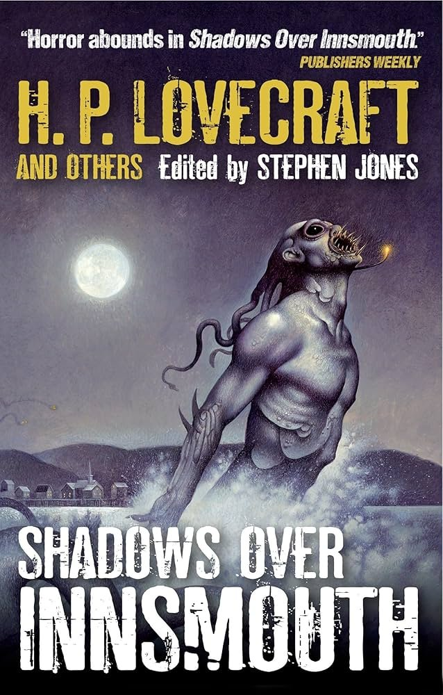

amber
@amber_digit2
其实确实可以

紫陽花開🌸
@Ajisai1207_
根据用户需求，Lovecraft的名作很适合作为跨儿童话模板：
>接触到为主流社会排斥的小众社群，并逐渐着迷
>在研究社群时一度感到恐惧，试图逃离
>后来发现了自己的真实认同，原来自己本就属于这个社群
>结局是主角帮同类逃离扭转机构，回归奇迹与光辉之城
还有颠覆传统的宗教体系，呀-呀-克苏鲁富坦！ https://t.co/Ikb9I8mJqX https://t.co/h6hktArFJF